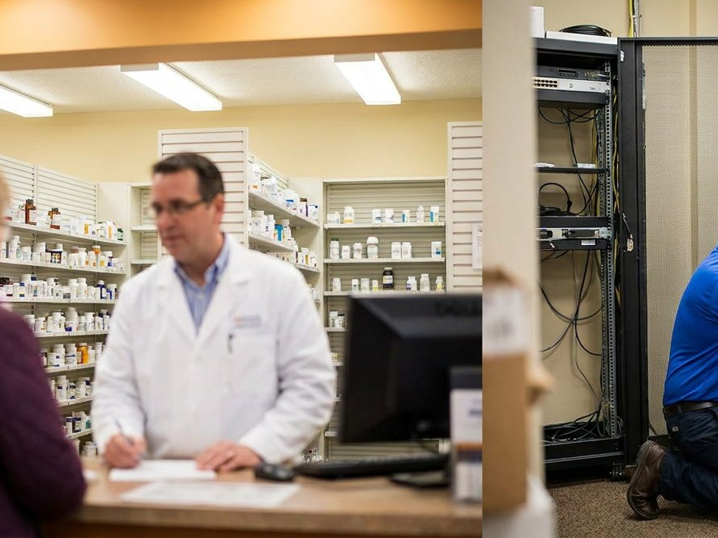

Retail companies rely heavily on technology to manage their inventory, sales, and customer information, which requires ongoing IT support to ensure that these systems are functioning properly and efficiently.
DTCloudOn keeps the systems your store runs on reliable and secure — from point-of-sale and inventory platforms to the customer data that keeps people coming back.
Get specialized retail IT support →The right IT partner does more than fix problems — it keeps your business running, secure, and ready to grow.

Retail companies are prime targets for cyber attacks due to the sensitive customer and financial data they store, which makes it crucial for them to have robust IT security measures and support to prevent and respond to threats.
DTCloudOn can implement and maintain security protocols such as firewalls, antivirus software, and encryption, which can protect your networks and systems from unauthorized access and data breaches.
Strengthen your retail security →Retail is continuing to rapidly evolve, and our teams understand these challenges and strive to create comprehensive strategies to overcome them. We can help your business transition to the digital era through an enhanced customer journey and upgraded retail strategies, using a cloud-based platform that provides key advantages such as analytics, reporting capabilities, and automation.
At DTCloudOn, we supply customized retail business plans to each client. Our committed teams create data-driven strategies to help you expand your business and make wiser decisions based on data. Our services also cover critical issues such as security and privacy, with best practices in email security to protect data and improve customer trust.
Explore cloud-based retail solutions →DTCloudOn managed services support and protect your business. From physical stores to e-commerce, we provide security, customer experience, and scalability solutions to fit your goals. Our customer journey strategy brings retailers an enhanced user experience, and we keep up with the most recent technological developments to help realize your vision.
Our managed services provide cloud-based platforms so you can deploy IT solutions for any location quickly and securely, with dedicated teams for each business location. Your customer data stays secure thanks to top-notch security measures, email security, and end-to-end encryption for transactions — everything your retail enterprise needs to thrive in the modern industry.
See our managed services →Contact DTCloudOn to see how we can protect your customer data and scale your retail business today.
Contact Us →IT services for retail focus on supporting point-of-sale systems, inventory platforms, customer data management, and both in-store and e-commerce operations. These services help retailers keep systems reliable, secure, and ready to scale as demand changes.
Through continuous monitoring, maintenance, and rapid support, IT services detect issues early and resolve them before they disrupt sales. This helps keep checkout systems, inventory tools, and customer-facing technology running smoothly.
Retailers store payment details and personal customer information, making them prime targets for cyberattacks. Cybersecurity services protect networks through firewalls, encryption, patching, and threat detection to reduce the risk of data breaches.
Yes. IT services integrate in-store systems with e-commerce platforms, ensuring secure transactions, consistent inventory data, and a unified customer experience across physical locations and online channels.
Cloud platforms enable centralized data access, analytics, automation, and rapid deployment of systems across locations. This helps retailers manage multiple stores efficiently and adapt quickly to changing market conditions.
IT infrastructures are designed to expand as new stores open or online operations grow. New locations can be connected quickly while maintaining consistent security and performance standards.
IT services support data-driven strategies by enabling reporting and analytics tools that provide insight into sales trends, inventory levels, and customer behavior, helping retailers make informed decisions.
By handling system management, security, and technical issues, managed IT services allow retail teams to concentrate on delivering strong customer experiences, improving operations, and driving sales growth.
Talk to a DTCloudOn specialist who understands retail — from POS reliability and cybersecurity to multi-location and e-commerce growth.
Request a Free Consultation →